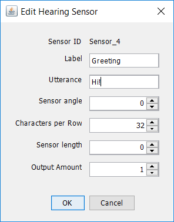

Sensors
Organisms have sensors that activate cells in their brains. An agent in Odor World also has sensors that it uses to receive information from its environment. These sensors can be coupled with input neurons in neural networks so that a neuron fires each time a sensor gets activated.
Sensor Panel
To add or edit an agent's sensors, double click on the agent to display the entity dialog and select the sensors tab. The sensor panel lists all of an agent's sensors along with its sensor type and label. Here is an example of the dialog, for an agent with three smell sensors:
To edit a sensor, right click on any part of the row in the sensors panel and select "Edit..." Alternatively, you can double-click on the row to summon the edit menu.

Labels can be renamed by double clicking on the label column.
To add a sensor, click on the "Add" button at the bottom of the panel. Then, select the sensor type and input the appropriate parameters.
Common Sensor Parameters
Label: An optional string descriptor associated with the individual sensor.
Sensor angle: The angle at which the sensor will be added. A sensor angle of 0 a smell sensor that is directly in front of the agent. A positive sensor angle locates the sensor at a position to the left of the agent's heading. A negative sensor angle locates the sensor at a position to the right of the agent's heading.
Sensor length: The distance from the center of the entity to which the sensor is to be added. A sensor length of 0 makes sensor angle irrelevant since located at the center of the agent.

To delete a sensor, select all the sensors to be deleted in the list and click on the "Delete" button at the bottom of the panel.
The different types of sensors in Odor World are described below.
Sensor Types
Agents in Simbrain can sense the presence of objects in OdorWorld such as trees, tents. etc. An agent can detect when it "bumps" or touches one of these map objects via bump sensors. Each bump Sensor is graphically represented by a white dot and is characterized by the following parameters:
Base Value: Determines the output value when a sensor is ‘bumped’ by an object.
Agents in Simbrain are able to detect their spatial location in the OdorWorld map via grid sensors. Grid sensors can be coupled to neural networks to visualize location through neural activation. Each grid sensor is graphically represented by a black cross and is characterized by the following parameters:
Activation Amount: Determines the amount of activation for a neuron coupled to a tile sensor when the tile sensor is activated.
Start X: Defines the x-coordinates for the location of the top-left corner of the tile sensor.
Start Y: Defines the y-coordinates for the location of the top-left corner of the tile sensor.
Num Columns: Determines the number of columns in the sensor grid.
Num Rows: Determines the number of rows in the sensor grid.
Cell Width: Determines the width (horizontal length) of each tile in the sensor grid.
Cell Height: Determines the height (vertical length) of each tile in the sensor grid.
A Hearing Sensor listens for a Speech effector which utters the same particular word that the hearing sensor hears. When a hearing sensor is activated by a speech effector, a thought bubble containing the associated utterance is displayed in Odor World. See the workspace bischof.zip for an implementation of hearing. Hearing sensors are characterized by the following parameters:


Utterance: The string or phrase associated with this sensor. Hearing sensors get activated when it senses a speech effectors of the same utterance.
Output Amount: The amount of activation to be sent to a neuron coupled with this sensor.
An Object Sensor detects the presence of other objects that exist in OdorWorld. When in close proximity to an object, an agent with an object sensor for that specific object will detect its presence. An object sensor is characterized by the following parameters:
Object Type: This specifies the type of object (ex. Swiss, Mouse, Flower, etc.) that the sensor detects.
Show Label: Determines if the label is shown on top of the sensor node. If Yes, the label is visible, if No, the label is not visible.
Base Value: The base value of the output before the decay function applies.
Decay Function: There are four types of decay functions: Gaussian, Linear, Quadratic, and Step. The decay function is characterized by the following parameters:
Dispersion: This determines the area of detectability. If the object is outside the radius of dispersion, it is not detectable and has no effect on the network.
Peak Distance: This determines the peak value.
Objects in Odor World can emit smells that smell sensors can detect. See the objects and smell sources page for more details on how smell vectors and sensor vectors work, and how they can be used in couplings.
Each agent in an Odor World by default has three smell sensors: a left whisker, a central sensor, and a right whisker. The left and right whiskers shoot off symmetrically from this center of perspective of the agent at an angle determined by the parameter Sensor angle, denoted by θ, which is in degrees.
Additional smell sensors can be added using the add smell sensor dialog.
Smell sensors are characterized by the common sensor parameters mentioned above.
A place cell is a cell that fires when an organism senses that it is in a particular location associated with that cell. An input neuron coupled with a tile sensor mimics the behavior of a place cell. When an agent is located inside a tile, its corresponding tile sensor gets activated. See the script actor-critic.bsh for an implementation of tile sensors in action.
Activation amount: Amount of activation that a neuron coupled with the tile sensor receives when the tile sensor is activated.
X and Y: Coordinates for the location of the top-left corner of the tile sensor.
Width and Height: Determines the size of the tile. Width specifies the horizontal length of the tile sensor. Height specifies the vertical length.